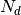
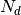
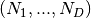
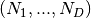

IOM_plugin_wavefunction¶
About the IOM_plugin_wavefunction class¶
The WaveBlocks Project
@author: R. Bourquin @copyright: Copyright (C) 2010, 2011, 2012, 2013, 2014, 2015 R. Bourquin @license: Modified BSD License
Class documentation¶
The WaveBlocks Project
IOM plugin providing functions for handling wavefunction data.
@author: R. Bourquin @copyright: Copyright (C) 2010, 2011, 2012, 2013, 2014 R. Bourquin @license: Modified BSD License
- IOM_plugin_wavefunction.add_wavefunction(self, parameters, flat=False, timeslots=None, blockid=0)[source]¶
Add storage for sampled wavefunctions. The wavefunction is saved in full hypercubic array shape with
 dimensions and
 data points in each direction.
dimensions and
 data points in each direction.Parameters: - parameters – A ParameterProvider instance containing at least the keys number_nodes and ncomponents.
- flat (Boolean, default is False.) – A flag indicating if we store wavefunctions
 in a hypercubic shape  or
in a flat shape
in a hypercubic shape  or
in a flat shape  with
with  .
. - timeslots – The number of time slots we need. Can be set to None to get automatically growing datasets.
- blockid – The ID of the data block to operate on.
- IOM_plugin_wavefunction.delete_wavefunction(self, blockid=0)[source]¶
Remove the stored wavefunction.
Parameters: blockid – The ID of the data block to operate on.
- IOM_plugin_wavefunction.has_wavefunction(self, blockid=0)[source]¶
Ask if the specified data block has the desired data tensor.
Parameters: blockid – The ID of the data block to operate on.
- IOM_plugin_wavefunction.load_wavefunction(self, timestep=None, blockid=0)[source]¶
Load the wavefunction values.
Parameters: - timestep – Load only the data of this timestep.
- blockid – The ID of the data block to operate on.
- IOM_plugin_wavefunction.load_wavefunction_timegrid(self, blockid=0)[source]¶
Load the wavefunction timegrid.
Parameters: blockid – The ID of the data block to operate on.
- IOM_plugin_wavefunction.save_wavefunction(self, wavefunctionvalues, timestep=None, blockid=0)[source]¶
Save the values
 of a WaveFunction instance.
of a WaveFunction instance.Parameters: - wavefunctionvalues (A list of ndarrays.) – A list of the values to save.
- timestep – The timestep at which we save the data.
- blockid – The ID of the data block to operate on.